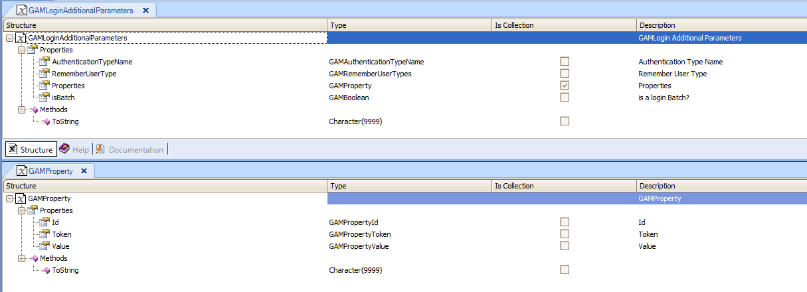

With GAM External Authentication Type you can send custom information to the external authentication program, regardless of the external authentication version used, which can be GAM External Authentication: version 1.0 or GAM External Authentication: version 2.0. You need to load the additional information in a variable based on GAMProperty object collection, and assign it to the "Properties" property of a GAMLoginAdditionalParameters object variable (see figure below). The GAMLoginAdditionalParameters object variable is an input of GAMRepository object Login method, used to log in to web applications. Example
The following is a sample code of a web login object which uses GAM External Authentication: version 2.0. The &CustomProperty variable is based on GAMProperty object. The information has to be loaded in a collection of GAMLoginAdditionalParameters object (see the figures below in order to understand the structure of these data types). &CustomProperty.Id = "Company" //&CustomProperty is based on GAMProperty object &CustomProperty.Token = "Local" &CustomProperty.Value = "120" &AdditionalParameter.Properties.Add(&CustomProperty) //&AdditionalParameter is based on GAMLoginAdditionalParameters &CustomProperty = new() &CustomProperty.Id = "Operation" &CustomProperty.Token = "Current" &CustomProperty.Value = "345" &AdditionalParameter.Properties.Add(&CustomProperty) &AdditionalParameter.AuthenticationTypeName = &LogOnTo &LoginOK = GAMRepository.Login(&UserName, &UserPassword, &AdditionalParameter, &Errors )
 This information is received (automatically) in the GAMWSLoginInSDT parameter of the web service when using GAM External Web Services Authentication Type or in the input parameter of the external program when using GAM Custom Authentication Type. See GAM External Authentication: version 1.0 and GAM External Authentication: version 2.0 for more details on how to obtain data from the external program side.
|
| Backlinks | ||
| GAM External Web Services Authentication Type | GAM Login Method | Howto: sending and receiving properties set at the login |